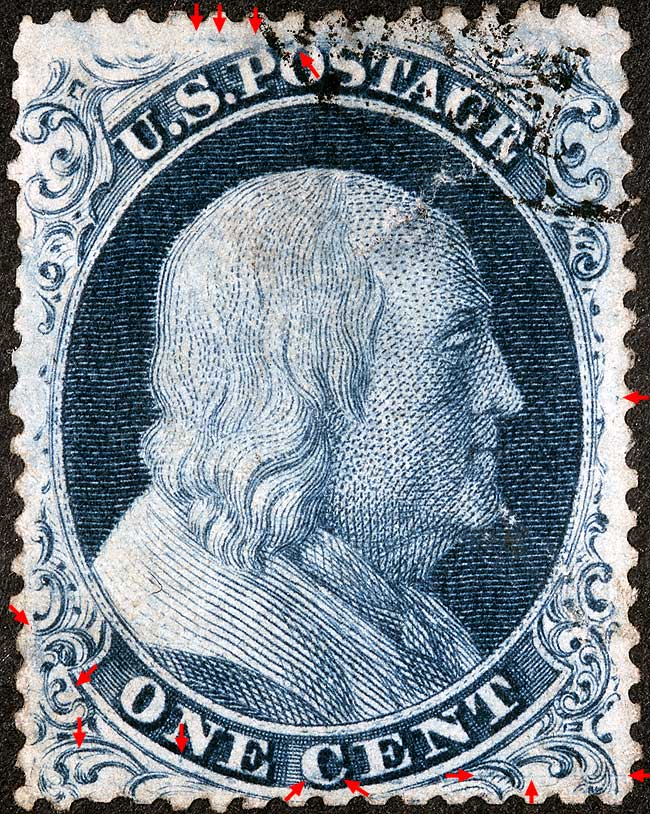
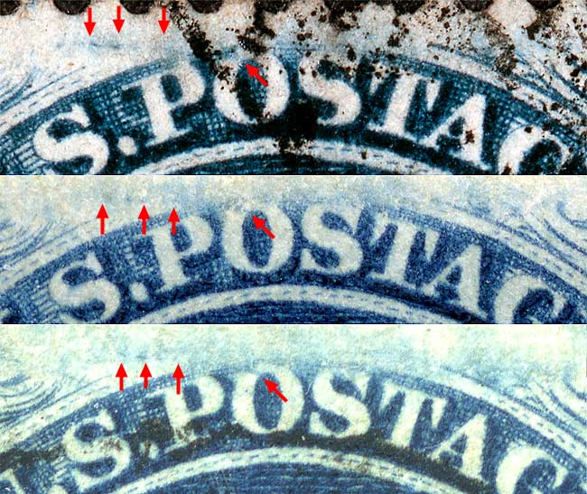
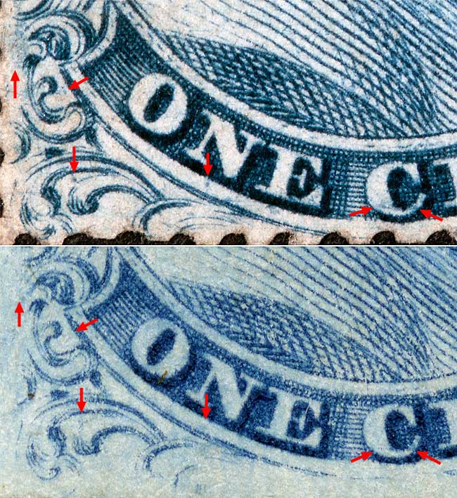
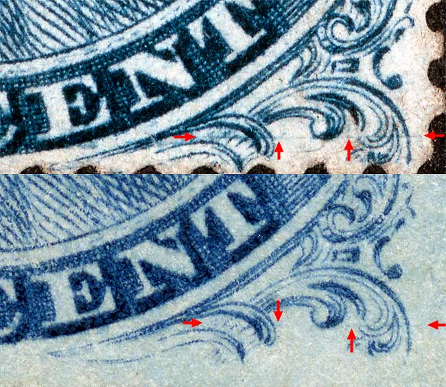

1¢ Franklin Issue of 1851-1857, PLATE 4 Position 45L4 |
Type III, Relief E Issued both imperforate (Scott 8) and perforated (Scott 21). Plating Notes: Dots or squiggle in the right margin. These marks, no doubt from foreign matter adhering to the transfer roll, occur on many E relief positions, some but not all of which are illustrated on the Neinken mats. Courtesy of George Kopecky |
|  |
| Figure 1. (BELOW) Blurs and dots of color above the PO and ST of POSTAGE as illustrated in the Neinken plating diagram.
 |
| Figure 2. (BELOW) A heavy dot below the N of ONE, and blur of color in the C of CENT as illustrated in the Neinken plating diagram. The plating marks illustrated below Ornament G in the plating diagram does not exactly represent what is visible on this patient. A small dot in the left plume attributable to a bit of foreign matter adhering to the transfer roll starting with 46L4 and carrying over to the next six plate entries, 86-45-85-44-84-43L4. This dot is shown on the Neinken 46L4 mat, but not on any of the other positions.
 |
| Figure 3. (BELOW) A horizontal plate scratch or layout line not illustrated in the plaing diagram. It should be noted that a similiar line can be found on position 49L4. On 49L4, the line is not horizontal and tilts downward to the right.
 |
| DISCLAIMER and COPYRIGHT INFORMATION: Thanks for visiting this site. I hope you learn something new as we are making new discoveries all the time. You, the visitor, have my permission to link to my pages and to share the INFORMATION with others. The images themselves fall under the fair use guidelines established by the United States Congress and Copyright law. Basically contact us before using. I also ask in return that you send me an e-mail if I have made a mistake, or have made some other technical blunder that in my rush to put these pages up would cause the visitor confusion. Please also visit my other website at www.slingshotvenus.com. and support the live music arts. While your there, be sure to purchase our music. There are not many philatelic rock stars around and we need all the help we can get. :-) I can be reached at: nerdman@ix.netcom.com |